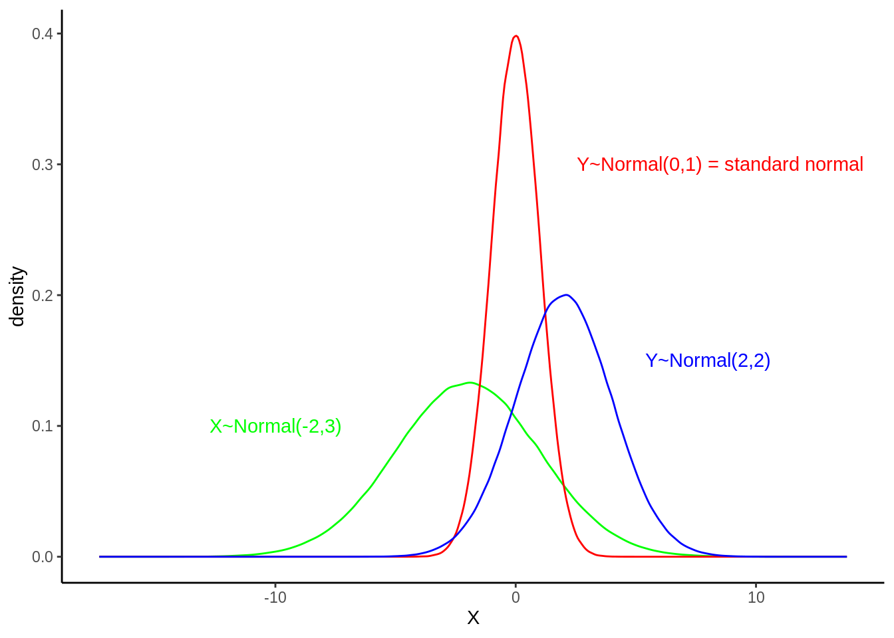
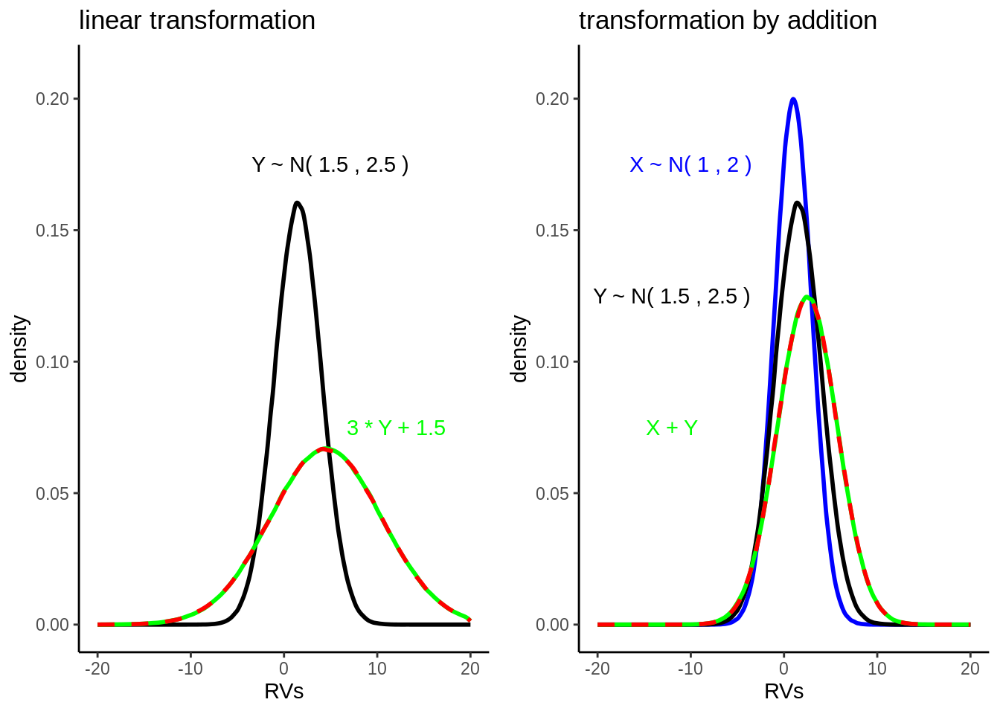

9 Appendix: Common probability distributions
9.1 Continous distributions of random variables
9.1.1 Normal distribution
\[X\sim Normal(\mu,\sigma^2)\]
n <- 1e6
rv.normal.intro <- data.frame(
X = rnorm(n, mean=-2, sd=3),
Y = rnorm(n, mean=0, sd=1),
Z = rnorm(n, mean=2, sd=2)
)
ggplot(data=rv.normal.intro, size=1)+
stat_density(aes(X), geom = "line", position="identity", color="green")+
annotate("text", x=-10, y=0.1, label="X~Normal(-2,3)", color="green")+
stat_density(aes(Y), geom = "line", position="identity", color="red")+
annotate("text", x=8.5, y=0.3, label="Y~Normal(0,1) = standard normal", color="red")+
stat_density(aes(Z), geom = "line", position="identity", color="blue")+
annotate("text", x=8, y=0.15, label="Y~Normal(2,2)", color="blue")+
theme_classic()
Special case of normal distributed random variables is the standard normal distributed variable with \(\mu=0\) and \(\sigma=1\): \(Y\sim Normal(0,1)\)
9.1.1.1 Probability density function
\[f(x)=\frac{1}{\sigma\sqrt{2\pi}}\exp\left(-0.5\left(\frac{x-\mu}{\sigma}\right)^2\right)\]
9.1.1.2 Cumulative distribution function
\[F(x)=\int_{-\inf}^{x}f(t)dt\]
9.1.1.3 Expected value
\[E(X)=\mu\]
9.1.1.4 Variance
\[Var(X)=\sigma^2\]
9.1.1.5 Z-transformation
\[Z=\frac{X-\mu}{\sigma}\]
9.1.1.6 Deviation and Coverage
- \(P(\mu-\sigma \leq X \leq \mu+\sigma)=0.6827\) (see dark blue area under the curve)
- \(P(\mu-2\sigma \leq X \leq \mu+2\sigma)=0.6827\) (see medium blue area under the curve)
- \(P(\mu-3\sigma \leq X \leq \mu+3\sigma)=0.6827\) (see light blue area under the curve)
# plot standard deviations of a normal distribution
ggplot(NULL, aes(x = c(-10, 10))) +
stat_function(fun = dnorm, args = list(mean = 0, sd = 2),
geom = "line",
xlim = c(-10, 10)) +
stat_function(fun = dnorm, args = list(mean = 0, sd = 2),
geom = "area",
fill = "blue",
alpha = .2,
xlim = c(-6, 6)) +
stat_function(fun = dnorm, args = list(mean = 0, sd = 2),
geom = "area",
fill = "blue",
alpha = .4,
xlim = c(-4, 4)) +
stat_function(fun = dnorm, args = list(mean = 0, sd = 2),
geom = "area",
fill = "blue",
alpha = .6,
xlim = c(-2, 2)) +
xlim(-10, 10)
9.1.1.7 Linear transformations
- If \(X\sim Normal(\mu, \sigma^2)\) is linear transformed by \(Y=a*X+b\), then the new random variable is again normal distributed with \(Y \sim Normal(a\mu+b,a^2\sigma^2)\). See plot left side.
- Are \(X\sim Normal(\mu_x, \sigma^2)\) and \(Y\sim Normal(\mu_y, \sigma^2)\) normal distributed and independent, then their sum is again normal distributed with \(X+Y \sim Normal(\mu_x+\mu_y, \sigma_x^2+\sigma_y^2)\). See plot right side.
#initialize parameters
muX = 1
sigmaX = 2
muY = 1.5
sigmaY = 2.5
a = 1.5
b = 1
n = 1e6
#create random variables
## normal distributed RV X
X <- rnorm(n = n, mean = muX, sd = sigmaX)
Y <- rnorm(n = n, mean = muY, sd = sigmaY)
## create linear transformation of X
Z <- a*X+b
## normal distributed RV V (equal to linear transformation: a*X+b)
V <- rnorm(n = n, mean = a*muX+b, sd = (a*sigmaX))
## create RV A as addition of X + Y
A <- X + Y
## normal ditributed RV B (equal to addition: X+Y)
B <- rnorm(n = n, mean = muX + muY, sd = sqrt(sigmaX^2 + sigmaY^2))
#create dataset
rv.normal <- data.frame(Y=Y, Z=Z, V=V, A=A, B=B)
#plot RVs
linear.tranform <- ggplot(data=rv.normal)+
stat_density(aes(Y), geom = "line", position = "identity", size=1)+
annotate("text", x=5, y=0.175, label=c(paste("Y~Normal(",muY,",",sigmaY,")")))+
stat_density(aes(Z), col="green", geom = "line", position = "identity", size=1)+
annotate("text", x=10, y=0.125, label=c(paste(a,"*Y+",b)), color="green")+
stat_density(aes(V), col="red", linetype="dashed", geom = "line", position = "identity", size=1)+
ggtitle("linear transformation")+
xlim(-20,20)+
ylim(0,0.21)+
theme_classic()
addition.transform <- ggplot(data=rv.normal)+
stat_density(aes(X), col="blue", size=1, geom = "line",
position = "identity")+
annotate("text", x=-10, y=0.175, label=c(paste("X~Normal(",muX,",",sigmaX,")")),
color="blue")+
stat_density(aes(Y), size=1, geom = "line",
position = "identity")+
annotate("text", x=-12, y=0.125, label=c(paste("Y~N(",muY,",",sigmaY,")")))+
stat_density(aes(A), col="green", size=1, geom = "line",
position = "identity")+
annotate("text", x=-12, y=0.075, label= "X + Y", color="green")+
stat_density(aes(B), col="red", linetype="dashed", size=1, geom = "line",
position = "identity")+
ggtitle("transformation by addition")+
xlim(-20,20)+
ylim(0,0.21)+
theme_classic()
grid.arrange(linear.tranform, addition.transform, ncol=2)
9.1.2 Chi-square distribution
\[Y\sim \chi^2(n)\]
Sum of \(n\) independent and standard normal distributed random variables \(X_1,X_2,...,X_n\).
\[Y=X_1^2+X_2^2+...+X_n^2\]
9.1.2.1 Expected value
\[E(Y)=n\]
9.1.2.2 Variance
\[Var(Y)=2n\]
9.1.2.3 Transformations
Sum of two \(\chi^2\)-distributed random variables \(X \sim \chi^2(m)\) and \(Y \sim \chi^2(n)\) is again a \(chi^2\)-distributed random variable \(X+Y=\chi^2(m+n)\).
#initialize parameters
n = 1e6
df = 3 #number of RVs
#create RV
## standard normal distributed RV X
X <- rnorm(n = n, mean = 0, sd = 1)
Y <- rnorm(n = n, mean = 0, sd = 1)
Z <- rnorm(n = n, mean = 0, sd = 1)
## create chi-square distributed RV
A <- X^2+Y^2+Z^2
## chi-square distributed RV
B <- rchisq(n=n, df=df)
#create data frame
rv.chisquare <- data.frame(X=X, Y=Y, Z=Z, A=A, B=B)
#plot RVs
rv.trans.chi <- ggplot(data=rv.chisquare)+
stat_density(aes(X), size=1, geom = "line",
position = "identity")+
annotate("text", x=10, y=0.25, label="std. normal")+
stat_density(aes(A), col="green", size=1, geom = "line",
position = "identity")+
annotate("text", x=10, y=0.15, label="chi-square", color="green")+
xlim(-10,30)+
ylim(0,0.42)+
ggtitle("Transform. of N(0,1)-RV")+
theme_classic()
rv.chisquare <- ggplot(data=rv.chisquare)+
stat_density(aes(A), col="green", size=1, geom = "line",
position = "identity")+
stat_density(aes(B), col="red",linetype="dashed", size=1, geom = "line",
position = "identity")+
xlim(0,30)+
ylim(0,0.42)+
ggtitle(expression(chi^2~"distribution"))+
theme_classic()
grid.arrange(rv.trans.chi, rv.chisquare, ncol=2)
9.1.3 Student t-distribution
\[T \sim t(n)\]
Consists of a standard normal distributed random variable \(X\sim Normal(0,1)\) and a \(chi^2\)-distributed random variable \(Y\sim \chi^2(n)\) (X and Y are independent):
\[T=\frac{X}{\sqrt{\frac{Y}{n}}}\]
9.1.3.1 Expected value
\[E(T)=0\]
9.1.3.2 Variance
\(Var(T)=\frac{n}{n-2}\) (for \(n \geq 3\))
#initialize parameters
n = 1e6
df = 2
# create RV
## normal distributed RV
X <- rnorm(n = n, mean = 0, sd = 1)
Y <- rnorm(n = n, mean = 0, sd = 1)
Z <- rnorm(n = n, mean = 0, sd = 1)
## create chisquare distributed RV
C <- X^2+Y^2
## create student-t distributed RV
B <- Z/sqrt(C/df)
## Student-t distributed RV
A <- rt(n=n, df=df)
# create data frame
data.studentt <- data.frame(X=X,C=C, B=B, A=A)
# plot RVs
rv.trans.t <- ggplot(data=data.studentt)+
stat_density(aes(X), size=1, geom = "line",
position = "identity")+
annotate("text", x=5, y=0.35, label="std. normal")+
stat_density(aes(C), col="blue", size=1, geom = "line",
position = "identity")+
annotate("text", x=5, y=0.4, label="chi-square", color="blue")+
stat_density(aes(B), col="green", size=1, geom = "line",
position = "identity")+
annotate("text", x=5, y=0.3, label="stundent-t", color="green")+
xlim(-10,10)+
ylim(0,0.5)+
ggtitle(expression("transform"~chi^2~"and N(0,1)-RV"))+
theme_classic()
rv.studentt <- ggplot(data=data.studentt)+
stat_density(aes(B), col="green", size=1, geom = "line",
position = "identity")+
stat_density(aes(A), col="red", linetype="dashed", size=1, geom = "line",
position = "identity")+
xlim(-10,10)+
ylim(0,0.5)+
ggtitle("student-t distribution")+
theme_classic()
grid.arrange(rv.trans.t, rv.studentt, ncol=2)
9.1.4 F distribution
\[F \sim F(m,n)\]
Consists of two \(chi^2\)-distributed random variables \(X\sim \chi^2(m)\) and \(Y\sim \chi^2(n)\):
\[F=\frac{\frac{X}{m}}{\frac{Y}{n}}\]
9.1.4.1 Expected value
\(E(F)=\frac{n}{n-2}\) (for \(n \geq 3\))
9.1.4.2 Variance
\(Var(F)=\frac{2n^2(n+m-2)}{m(n-4)(n-2)^2}\) (for \(n \geq 5\))
#initialize parameters
n = 1e6
df = 3 #number of RVs
# create RV
## standard normal distributed RVs
Q <- rnorm(n = n, mean = 0, sd = 1)
V <- rnorm(n = n, mean = 0, sd = 1)
W <- rnorm(n = n, mean = 0, sd = 1)
X <- rnorm(n = n, mean = 0, sd = 1)
Y <- rnorm(n = n, mean = 0, sd = 1)
Z <- rnorm(n = n, mean = 0, sd = 1)
## create new chisquare distributed RVs
D <- (Q^2+V^2+W^2)
C <- (X^2+Y^2+Z^2)
## create addition of chisquare RVs
B <- (D/df)/(C/df)
## F distributed RV
A <- rf(n=n, df1=df, df2=df)
#create data frame
data.F <- data.frame(X=X,Y=Y,Z=Z,W=W,D=D,C=C,B=B,A=A)
#plot RVs
rv.trans.f <- ggplot(data=data.F)+
stat_density(aes(X), size=1, geom = "line",
position = "identity")+
annotate("text", x=5, y=0.3, label="std. normal")+
stat_density(aes(D), col="blue", size=1, geom = "line",
position = "identity")+
annotate("text", x=6.5, y=0.15, label="chi-square",color="blue")+
stat_density((aes(B)), col="green", size=1, geom = "line",
position = "identity")+
annotate("text", x=5, y=0.5, label="F distribution", color="green")+
xlim(-5,15)+
ggtitle(expression("transform"~chi^2~"RVs"))+
theme_classic()
rv.f <- ggplot(data=data.F)+
stat_density((aes(B)), col="green", size=1, geom = "line", position = "identity")+
stat_density(aes(A), col="red", linetype="dashed", size=1, geom = "line", position = "identity")+
xlim(0,15)+
ggtitle("F distribution")+
theme_classic()
grid.arrange(rv.trans.f, rv.f, ncol=2)